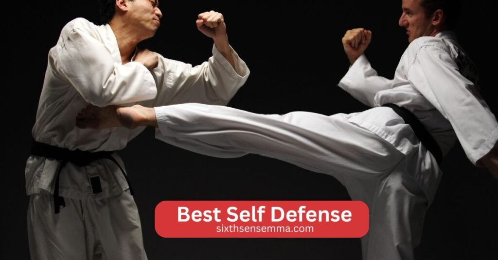
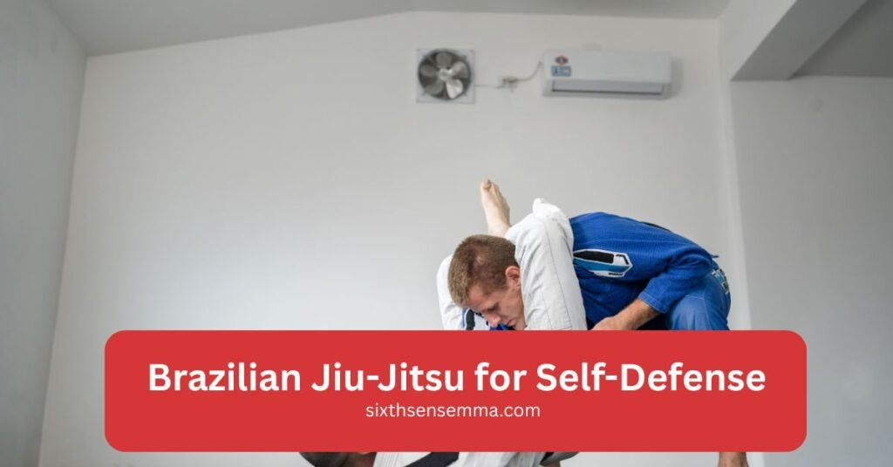
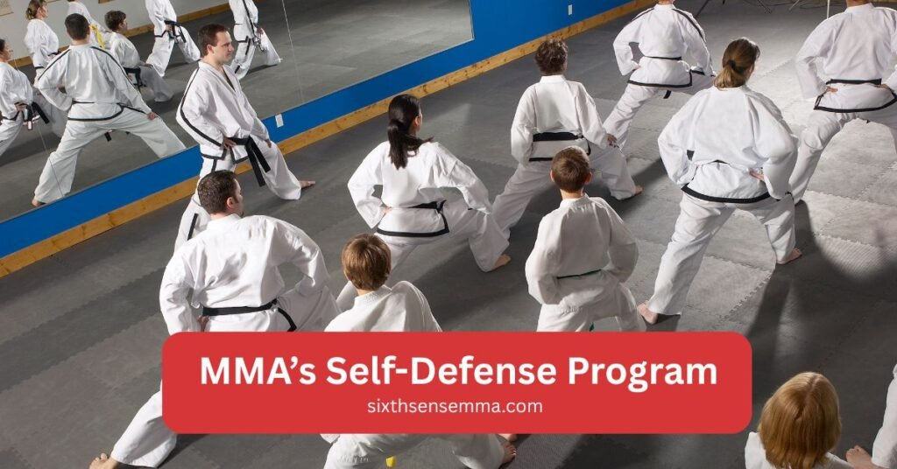

Best Self Defense Martial Arts for Protection

Best Self Defense, when it comes to personal protection, learning the right self defense martial art is essential. Whether you’re trying to enhance your confidence, protect yourself in dangerous situations, or simply improve your fitness, choosing the best martial art for self defense can make all the difference.
Many martial arts offer unique techniques and strategies that can help you respond to real world threats. In this article, we’ll explore some of the most effective martial arts for self defense, focusing on their core strengths and how they prepare you for a variety of combat scenarios. Picking the right one that fits your needs is key to ensuring you are fully equipped for protection.
Best self defense for Martial Arts
There’s no shortage of martial arts that can help with self defense, but some stand out more than others for their effectiveness in real world situations. Krav Maga, Brazilian Jiu Jitsu, and Muay Thai are among the top choices for individuals who are serious about learning self defense.
Krav Maga, developed for the Israeli military, focuses on neutralizing threats quickly, especially in close quarters combat. Brazilian Jiu Jitsu, known for its ground fighting and grappling techniques, is ideal for defending against larger opponents. Muay Thai, with its emphasis on powerful strikes using elbows, knees, and low kicks, is an excellent striking martial art.
Each of these martial arts has unique techniques tailored to different combat situations, making them highly effective in a variety of self defense scenarios. Understanding their individual strengths will help you make an informed decision about which one suits your needs.

Brazilian Jiu Jitsu for Self Defense
Brazilian Jiu-Jitsu (BJJ) is incredibly effective in self-defense situations, especially when the confrontation goes to the ground. BJJ teaches you how to control and submit an opponent using leverage and technique, rather than relying on size or strength.
Key grappling techniques like joint locks and chokes can help you neutralize an attacker quickly, even if they’re larger or stronger.By mastering these techniques, you’ll gain the ability to defend yourself in close quarters, making BJJ one of the best martial arts for personal security in a variety of self defense scenarios.
Muay Thai for Self Defense
Muay Thai’s striking techniques are highly effective in self defense because they rely on powerful, devastating blows. With a focus on using fists, elbows, knees, and shins, Muay Thai teaches you to disable an attacker swiftly, whether you’re defending yourself against one or multiple opponents.
Elbow and knee strikes are especially useful in close combat, allowing you to deliver damaging blows even when the attacker is close to you. Muay Thai’s emphasis on clinch work and low kicks also makes it perfect for self defense, providing tools to keep attackers at a distance or take them down quickly.
MMA for Self Defense
Mixed Martial Arts (MMA) combines techniques from various martial arts, such as Brazilian Jiu Jitsu, Muay Thai, and wrestling, making it a versatile choice for self defense. MMA provides a well rounded skill set, equipping you with both striking and grappling techniques to handle a wide range of dangerous situations.
Whether you need to fight standing up or take the fight to the ground, MMA prepares you for multiple combat scenarios. This versatility makes MMA particularly useful when defending yourself in unpredictable situations, giving you the tools to respond effectively, no matter what the situation entails.

Why Choose Sixth Sense MMA for Self Defense Training
Sixth Sense MMA offers top tier self defense programs designed to give you practical skills for real world situations. Our training covers a variety of martial arts, including Brazilian Jiu Jitsu, Muay Thai, and MMA, ensuring you gain a well rounded understanding of both striking and grappling techniques.
Each program is tailored to meet the needs of all skill levels, from beginners to experienced martial artists. At Sixth Sense MMA, our focus is on equipping you with the confidence and ability to protect yourself in any scenario. By training with us, you will not only improve your fitness and discipline but also prepare yourself to handle real threats with effective techniques, boosting your personal security.
What Makes Sixth Sense MMA’s Self Defense Program Stand Out?
What makes Sixth Sense MMA’s self defense program unique is our team of expert instructors who bring years of experience and real world knowledge. Our instructors focus on teaching practical, easy to learn techniques that are directly applicable in self defense situations.
Additionally, our specialized programs are tailored to meet the needs of individuals, regardless of skill level, ensuring everyone receives personalized attention. Client testimonials and success stories consistently highlight the transformation our students experience. Many have shared how our training has boosted their confidence, helping them feel safer and more prepared to face real life challenges.
Benefits of Training at Sixth Sense MMA for Self Defense
- Enhanced Confidence
Training at Sixth Sense MMA boosts your self esteem and confidence, allowing you to feel more secure in everyday situations. As you learn self defense techniques, you’ll gain a stronger sense of control over your personal safety. - Real World Self Defense Skills
The programs at Sixth Sense MMA focus on practical techniques that can be used in real world scenarios. Whether you’re facing a single attacker or multiple opponents, the training prepares you to effectively protect yourself. - Improved Physical Fitness
Self defense training involves a mix of cardio, strength, and flexibility exercises that improve your overall fitness. Regular training enhances endurance, muscle tone, and coordination, keeping you fit while learning life saving skills. - Stress Relief and Mental Clarity
Martial arts training is an excellent way to reduce stress. The physical exertion and mental focus required in each class help clear your mind, reduce anxiety, and improve your overall mental well being. - Discipline and Focus
Martial arts is built on the principles of discipline and focus. At Sixth Sense MMA, you’ll learn how to set goals, stay consistent, and develop a focused mindset that extends beyond training and into everyday life. - Self Protection Against Larger Opponents
Brazilian Jiu Jitsu and other martial arts offered at Sixth Sense MMA focus on techniques that allow you to defend yourself even against larger and stronger opponents. These techniques help you stay safe no matter the size difference. - Learn Effective Striking Techniques
Muay Thai and other striking arts at Sixth Sense MMA teach you powerful blows, including punches, kicks, elbows, and knees. These techniques are incredibly useful for self defense and help you disable an attacker quickly. - Ability to Handle High Pressure Situations
The training at Sixth Sense MMA is designed to simulate real life situations, which helps you learn how to stay calm under pressure. With constant practice, you’ll develop the ability to think clearly and act decisively when it matters most. - Building Mental Toughness
Martial arts training at Sixth Sense MMA is challenging, both physically and mentally. It builds resilience, teaches perseverance, and helps you push through adversity, improving your ability to face difficult situations with a strong mindset. - Community and Support
At Sixth Sense MMA, you’ll be part of a supportive community that encourages growth, learning, and mutual respect. Training with like minded individuals fosters a sense of camaraderie, making the journey of self defense learning enjoyable and rewarding.
Customer Reviews
Muntasir Zaman
“Great gym! Came in for a session today and loved the environment and instruction. The head coach Matheus really paid attention to small details and made sure to give everyone adequate time and focus. Excited to come back!”
Isabella Barbosa
“So nice space!! The staff are very friendly. I loved “
Ameera Abbasi
“I had gone for a free trial session and it was so fun. The instructor taught us very well, especially for this being our first time. It was a good workout and I definitely want to come back regularly!”
FunDadMo
“Great hidden jiu jitsu gym for all ages, perfect for learning self defense techniques.” The teacher is great and really knows the art.”
Ben Holland
“So excited to have a jiu jitsu gym in our neighborhood! This is what Coppell needed!”
Sana Haq
“My kids love their classes. Professional and friendly instructors ensure you learn effective martial arts for self defense. Clean and well lit space.”
Noor Ghaffar
“I’m so happy to see a good mix of guys and girls at the gym. The pricing isn’t too bad.”
Sagar deep singh
“Coach is super awesome. Soft and tough at the same time with kids.”
Shiraz
“Huge facility and very welcoming coach. Great group of people to train with.”
Adnan Sheriff
“A very clean and organized facility with highly skilled coaches who create a friendly environment for all levels.”
Mohammed Shaazuddin
“Friendly staff and coach with a great atmosphere of learning and support.”
Get Started with Self Defense Today
Ready to take control of your personal safety? Sign up for self defense training at Sixth Sense MMA and start building the skills you need to protect yourself in any situation. Our programs are designed to give you practical, hands on experience in a variety of martial arts, including Brazilian Jiu Jitsu, Muay Thai, and MMA, ensuring you’re prepared for real world scenarios.
To get started, simply visit our website, choose a program that fits your needs, and sign up for your first class. Whether you’re a complete beginner or have prior martial arts experience, our team is here to guide you every step of the way. Start your journey towards stronger self defense today, and gain the confidence to handle whatever comes your way.
Conclusion
Training at Sixth Sense MMA isn’t just about learning self defense; it’s about transforming yourself into a more confident, disciplined, and capable individual. Whether you’re looking to protect yourself in real life situations, improve your fitness, or build mental toughness, our programs equip you with the skills and mindset needed to handle any challenge.
With expert instructors, practical techniques, and a supportive community, Sixth Sense MMA offers a comprehensive approach to self defense that goes beyond just martial arts. Start your journey with us today and gain the confidence and abilities to protect yourself and those around you.
Follow Us on Social Media
Stay connected with Sixth Sense MMA through our social media channels. Follow us for class updates, training tips, and a closer look at our self defense community.
FAQ’s
BJJ teaches grappling, chokes, and joint locks, enabling you to control or neutralize attackers—even those larger or stronger.
Muay Thai focuses on powerful strikes using elbows, knees, kicks, and clinch techniques, making it ideal for close-range defense.
Yes. MMA combines striking and grappling, giving you versatile skills to handle threats whether standing or on the ground.
Not at all. Sixth Sense MMA offers programs for all skill levels, from complete beginners to advanced martial artists.
Beyond protection, you’ll improve fitness, reduce stress, gain confidence, build discipline, and develop mental toughness.
Train with us in Coppell
The first class is free. Shorts, a t-shirt and a water bottle. We lend the rest.
Book a free class